System architecture
See the browser, Next.js, FastAPI, Google Drive, PostgreSQL, Qdrant, and OpenAI, with preparation and answering kept distinct.
View interactive diagramThree source-backed diagrams cover the running system, Drive preparation, and question answering. Each opens with named routes you can play or step through using Archify's built-in controls.

See the browser, Next.js, FastAPI, Google Drive, PostgreSQL, Qdrant, and OpenAI, with preparation and answering kept distinct.
View interactive diagram
Compare first and incremental sync, then follow ingestion, chunking, embedding, and index build.
View interactive diagram
Explore top-level routing, linear and optional graph retrieval, bounded context, generation, and citations.
View interactive diagram